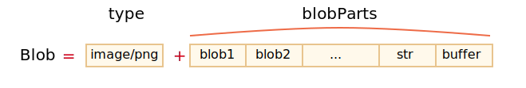

ArrayBuffer 和视图（view）都是 ECMA 标准的一部分，是 JavaScript 的一部分。
在浏览器中，还有其他更高级的对象，特别是 Blob，在 File API 中有相关描述。
Blob 由一个可选的字符串 type（通常是 MIME 类型）和 blobParts 组成 —— 一系列其他 Blob 对象，字符串和 BufferSource。

构造函数的语法为：
new Blob(blobParts, options);blobParts 是 Blob/BufferSource/String 类型的值的数组。options 可选对象：type —— Blob 类型，通常是 MIME 类型，例如 image/png，endings —— 是否转换换行符，使 Blob 对应于当前操作系统的换行符（\r\n 或 \n）。默认为 "transparent"（啥也不做），不过也可以是 "native"（转换）。例如：
// 从字符串创建 Blob
let blob = new Blob(["<html>…</html>"], {type: 'text/html'});
// 请注意：第一个参数必须是一个数组 [...]// 从类型化数组（typed array）和字符串创建 Blob
let hello = new Uint8Array([72, 101, 108, 108, 111]); // 二进制格式的 "hello"
let blob = new Blob([hello, ' ', 'world'], {type: 'text/plain'});我们可以用 slice 方法来提取 Blob 片段：
blob.slice([byteStart], [byteEnd], [contentType]);byteStart —— 起始字节，默认为 0。byteEnd —— 最后一个字节（专有，默认为最后）。contentType —— 新 blob 的 type，默认与源 blob 相同。参数值类似于 array.slice，也允许是负数。
```smart header="Blob 对象是不可改变的"
我们无法直接在 Blob 中更改数据，但我们可以通过 slice 获得 Blob 的多个部分，从这些部分创建新的 Blob 对象，将它们组成新的 Blob，等。
这种行为类似于 JavaScript 字符串：我们无法更改字符串中的字符，但可以生成一个新的改动过的字符串。
## Blob 用作 URL
Blob 可以很容易用作 `<a>`、`<img>` 或其他标签的 URL，来显示它们的内容。
多亏了 `type`，让我们也可以下载/上传 `Blob` 对象，而在网络请求中，`type` 自然地变成了 `Content-Type`。
让我们从一个简单的例子开始。通过点击链接，你可以下载一个具有动态生成的内容为 `hello world` 的 `Blob` 的文件：
```html run
<!-- download 特性（attribute）强制浏览器下载而不是导航 -->
<a download="hello.txt" href='#' id="link">Download</a>
<script>
let blob = new Blob(["Hello, world!"], {type: 'text/plain'});
link.href = URL.createObjectURL(blob);
</script>我们也可以在 Javascript 中动态创建一个链接，通过 link.click() 模拟一个点击，然后便自动下载了。
下面是类似的代码，此代码可以让用户无需任何 HTML 即可下载动态生成的 Blob（译注：也就是通过代码模拟用户点击，从而自动下载）：
let link = document.createElement('a');
link.download = 'hello.txt';
let blob = new Blob(['Hello, world!'], {type: 'text/plain'});
link.href = URL.createObjectURL(blob);
link.click();
URL.revokeObjectURL(link.href);URL.createObjectURL 取一个 Blob，并为其创建一个唯一的 URL，形式为 blob:<origin>/<uuid>。
也就是 link.href 的值的样子：
blob:https://javascript.info/1e67e00e-860d-40a5-89ae-6ab0cbee6273浏览器内部为每个通过 URL.createObjectURL 生成的 URL 存储了一个 URL -> Blob 映射。因此，此类 URL 很短，但可以访问 Blob。
生成的 URL（即其链接）仅在当前文档打开的状态下才有效。它允许引用 <img>、<a> 中的 Blob，以及基本上任何其他期望 URL 的对象。
不过它有个副作用。虽然这里有 Blob 的映射，但 Blob 本身只保存在内存中的。浏览器无法释放它。
在文档退出时（unload），该映射会被自动清除，因此 Blob 也相应被释放了。但是，如果应用程序寿命很长，那这个释放就不会很快发生。
因此，如果我们创建一个 URL，那么即使我们不再需要该 Blob 了，它也会被挂在内存中。
URL.revokeObjectURL(url) 从内部映射中移除引用，因此允许 Blob 被删除（如果没有其他引用的话），并释放内存。
在上面最后一个示例中，我们打算仅使用一次 Blob，来进行即时下载，因此我们立即调用 URL.revokeObjectURL(link.href)。
而在前一个带有可点击的 HTML 链接的示例中，我们不调用 URL.revokeObjectURL(link.href)，因为那样会使 Blob URL 无效。在调用该方法后，由于映射被删除了，因此该 URL 也就不再起作用了。
URL.createObjectURL 的一个替代方法是，将 Blob 转换为 base64-编码的字符串。
这种编码将二进制数据表示为一个由 0 到 64 的 ASCII 码组成的字符串，非常安全且“可读“。更重要的是 —— 我们可以在 "data-url" 中使用此编码。
"data-url" 的形式为 data:[<mediatype>][;base64],<data>。我们可以在任何地方使用这种 url，和使用“常规” url 一样。
例如，这是一个笑脸：
<img src="data:image/png;base64,R0lGODlhDAAMAKIFAF5LAP/zxAAAANyuAP/gaP///wAAAAAAACH5BAEAAAUALAAAAAAMAAwAAAMlWLPcGjDKFYi9lxKBOaGcF35DhWHamZUW0K4mAbiwWtuf0uxFAgA7">浏览器将解码该字符串，并显示图像：
我们使用内建的 FileReader 对象来将 Blob 转换为 base64。它可以将 Blob 中的数据读取为多种格式。在下一章 我们将更深入地介绍它。
下面是下载 Blob 的示例，这次是通过 base-64：
let link = document.createElement('a');
link.download = 'hello.txt';
let blob = new Blob(['Hello, world!'], {type: 'text/plain'});
*!*
let reader = new FileReader();
reader.readAsDataURL(blob); // 将 Blob 转换为 base64 并调用 onload
*/!*
reader.onload = function() {
link.href = reader.result; // data url
link.click();
};这两种从 Blob 创建 URL 的方法都可以用。但通常 URL.createObjectURL(blob) 更简单快捷。
+ 如果介意内存，我们需要撤销（revoke）它们
+ 直接访问 `Blob`，无需“编码/解码”
- 无需撤销（revoke）任何操作。
- 对大的 `Blob` 进行编码时，性能和内存会有损耗。我们可以创建一个图像（image）的、图像的一部分、或者甚至创建一个页面截图的 Blob。这样方便将其上传至其他地方。
图像操作是通过 <canvas> 元素来实现的：
Blob，并在创建完成后使用其运行 callback。在下面这个示例中，图像只是被复制了，不过我们可以在创建 blob 之前，从中裁剪图像，或者在 canvas 上对其进行转换：
// 获取任何图像
let img = document.querySelector('img');
// 生成同尺寸的 <canvas>
let canvas = document.createElement('canvas');
canvas.width = img.clientWidth;
canvas.height = img.clientHeight;
let context = canvas.getContext('2d');
// 向其中复制图像（此方法允许剪裁图像）
context.drawImage(img, 0, 0);
// 我们 context.rotate()，并在 canvas 上做很多其他事情
// toBlob 是异步操作，结束后会调用 callback
canvas.toBlob(function(blob) {
// blob 创建完成，下载它
let link = document.createElement('a');
link.download = 'example.png';
link.href = URL.createObjectURL(blob);
link.click();
// 删除内部 blob 引用，这样浏览器可以从内存中将其清除
URL.revokeObjectURL(link.href);
}, 'image/png');如果我们更喜欢 async/await 而不是 callback：
let blob = await new Promise(resolve => canvasElem.toBlob(resolve, 'image/png'));对于页面截屏，我们可以使用诸如 https://github.com/niklasvh/html2canvas 之类的库。它所做的只是扫一遍浏览器页面，并将其绘制在 <canvas> 上。然后，我们就可以像上面一样获取一个它的 Blob。
Blob 构造器允许从几乎所有东西创建 blob，包括任何 BufferSource。
但是，如果我们需要执行低级别的操作的话，则可以使用 FileReader 从 blob 中获取最低级别的 ArrayBuffer：
// 从 blob 获取 arrayBuffer
let fileReader = new FileReader();
*!*
fileReader.readAsArrayBuffer(blob);
*/!*
fileReader.onload = function(event) {
let arrayBuffer = fileReader.result;
};ArrayBuffer，Uint8Array 及其他 BufferSource 是“二进制数据”，而 Blob 则表示“具有类型的二进制数据”。
这样可以方便 Blob 用于在浏览器中非常常见的上传/下载操作。
XMLHttpRequest，fetch 等进行 Web 请求的方法可以自然地使用 Blob，也可以使用其他类型的二进制数据。
我们可以轻松地在 Blob 和低级别的二进制数据类型之间进行转换：
new Blob(...) 构造函数从一个类型化数组（typed array）创建 Blob。FileReader 从 Blob 中取回 ArrayBuffer，然后在其上创建一个视图（view），用于低级别的二进制处理。